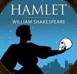

Nuestros clásicos
Las crónicas de narnia: El León, la Bruja y el Ropero
C.S. Lewis
En plena Segunda Guerra Mundial, cuatro hermanos - Peter, Susan, Edmund y Lucy Pevensie - son enviados al campo para refugiarse en casa de un anciano profesor. Mientras exploran la enorme mansión, Lucy descubre un ropero mágico que lleva a un mundo de fantasía llamado Narnia, donde los animales hablan, y criaturas mitológicas como faunos, centauros y brujas cobran vida. Sin embargo, Narnia está atrapada en un invierno eterno, gobernado con puño de hierro por la malvada Bruja Blanca. Poco a poco, los hermanos se adentran en Narnia y se involucran en una lucha épica por la libertad de sus habitantes.
Guiados por Aslan, el majestuoso y sabio león que simboliza la esperanza y el sacrificio, los niños enfrentan grandes pruebas de valentía, lealtad y perdón. La novela explora temas de redención, el poder del bien sobre el mal y la importancia de la familia y la amistad. A través de la aventura en Narnia, cada personaje encuentra su propio camino y descubre su fuerza interior, recordándonos que la verdadera magia radica en el coraje y el amor. Esta historia, llena de simbolismo y enseñanzas profundas, sigue cautivando a lectores de todas las edades, convirtiéndose en un clásico perdurable de la literatura fantástica.
El señor de los anillos
J.R.R. Tolkien
La historia comienza cuando el joven hobbit Frodo Baggins hereda un anillo de su tío Bilbo, sin saber que este objeto aparentemente inofensivo tiene el poder de controlar el destino del mundo. Bajo la guía del mago Gandalf y acompañado por un grupo de amigos y héroes, Frodo emprende la peligrosa misión de destruir el Anillo Único en las llamas del Monte del Destino, en Mordor, el único lugar donde puede ser destruido. Durante su travesía, el grupo enfrenta pruebas de lealtad, tentación y sacrificio."El Señor de los Anillos" explora temas de amistad, heroísmo y la lucha eterna entre el bien y el mal.
A través del viaje de Frodo y sus compañeros, Tolkien nos muestra que el valor y la esperanza pueden surgir incluso en los momentos más oscuros. La trilogía es una de las sagas de fantasía más influyentes de la literatura, y su profundo simbolismo y su detallado universo han cautivado a generaciones de lectores.
La odisea
Homero
"La Odisea" narra el arduo viaje de regreso de Odiseo a Ítaca, su hogar, tras la guerra de Troya. Durante diez años, enfrenta numerosos obstáculos impuestos por los dioses, incluyendo monstruos como el cíclope Polifemo, las tentadoras sirenas y la hechicera Circe, quienes tratan de desviar su curso. Con inteligencia y astucia, Odiseo consigue superar estos peligros, demostrando su habilidad para enfrentar cualquier situación.
Al mismo tiempo, su esposa Penélope y su hijo Telémaco esperan su regreso, manteniendo la esperanza y resistiendo a los pretendientes que desean ocupar el lugar de Odiseo. La epopeya es un relato épico de aventura y supervivencia, pero también una profunda reflexión sobre la perseverancia, el amor y el deseo de regresar a casa. La historia de Odiseo simboliza el viaje humano de enfrentarse a desafíos para encontrar el camino de vuelta a lo esencial: la familia y el hogar.
Hamlet
William Shakespeare
Hamlet, el príncipe de Dinamarca, descubre que su padre fue asesinado por su propio hermano, quien ahora ocupa el trono y está casado con su madre. Torturado por la traición y su deseo de justicia, Hamlet se embarca en una búsqueda de venganza, fingiendo locura para descubrir la verdad. Sin embargo, su duda constante y su profunda introspección lo llevan a un conflicto interno que lo consume, atrapándolo en una espiral de indecisión y desesperación.
"Hamlet" es una tragedia que explora la naturaleza de la venganza, la traición y la corrupción moral. La obra muestra cómo el deseo de justicia puede transformarse en una autodestrucción y plantea preguntas sobre la existencia, la muerte y el significado de la vida. Shakespeare captura en Hamlet las complejidades de la naturaleza humana, y su soliloquio "Ser o no ser" sigue siendo una de las meditaciones más famosas sobre el dilema de la vida y la muerte en la literatura.
Alicia en el País de las Maravillas
Lewis Carroll
Alicia, una niña curiosa y aventurera, cae en la madriguera de un conejo y se encuentra en un mundo surrealista lleno de personajes extraños y situaciones absurdas. En este reino onírico, donde nada es lo que parece, conoce a figuras icónicas como el Sombrerero Loco, la Reina de Corazones y el Gato de Cheshire, quienes desafían la lógica y ponen a prueba la percepción de Alicia sobre la realidad y el absurdo.
La historia, más que un simple cuento infantil, es una sátira de la sociedad victoriana y un análisis de los límites de la lógica y la razón. La obra de Carroll, con su humor y creatividad, sigue siendo relevante en la cultura popular y ha inspirado numerosas interpretaciones filosóficas. "Alicia en el País de las Maravillas" es una invitación a explorar la imaginación sin restricciones y a cuestionar lo que consideramos "normal".
Anna Kanerina
Leon Tolstói
Anna Karenina, una mujer de la alta sociedad rusa, se ve atrapada en un matrimonio infeliz y encuentra en el amor del Conde Vronsky una nueva esperanza de felicidad. Sin embargo, su romance prohibido la convierte en una paria, enfrentándola a las duras críticas de su círculo social. Su vida se convierte en una lucha entre su pasión por Vronsky y el aislamiento al que la somete la sociedad, que la lleva a una desesperación sin retorno.
Tolstói utiliza la historia de Anna como un espejo de las tensiones sociales y morales en la Rusia del siglo XIX. A través de personajes ricos y complejos, "Anna Karenina" profundiza en temas como la fidelidad, el deseo y las limitaciones impuestas por la sociedad. La novela sigue siendo una de las obras más completas sobre las complejidades del amor y el sacrificio, y una crítica a la hipocresía social.
Fahrenheit 451
Ray Bradbury
En un futuro donde los libros están prohibidos, los bomberos no apagan incendios, sino que queman libros para suprimir el conocimiento y la diversidad de pensamiento. Montag, uno de estos bomberos, comienza a cuestionar su papel en la sociedad tras conocer a una joven que le muestra otra forma de vida. A medida que su curiosidad crece, Montag decide desafiar al sistema y se convierte en un fugitivo en busca de la verdad.
"Fahrenheit 451" es una reflexión sobre la censura, la conformidad y el poder de la literatura para transformar vidas. Bradbury muestra un mundo en el que la ignorancia y la superficialidad son fomentadas por el Estado para controlar a la población. La novela es un llamado a la preservación de la libertad de pensamiento y un recordatorio de la importancia de la literatura en la construcción de una sociedad crítica y consciente.
El Gran Gatsby
F. Scott Fitzgerald
En el esplendor de la era del jazz y el lujo de los años 20, Nick Carraway se convierte en vecino del enigmático Jay Gatsby, un millonario que organiza fiestas extravagantes cada fin de semana. Sin embargo, detrás de su riqueza y su deslumbrante vida social, Gatsby esconde una profunda soledad y un amor obsesivo por Daisy Buchanan, la esposa de otro hombre. Su deseo de recuperar el amor perdido lo lleva a crear una vida entera basada en ilusiones y mentiras, creyendo que el dinero y el poder le permitirán cambiar el pasado.
"El Gran Gatsby" es una crítica aguda a la superficialidad de la alta sociedad y al "sueño americano", cuestionando la verdadera naturaleza de la felicidad y el éxito. Fitzgerald muestra cómo el exceso y la ambición pueden llevar a la autodestrucción y cómo el amor no puede ser forzado ni comprado. La novela explora los límites del deseo y la fragilidad de las aspiraciones humanas, retratando a una generación que vive en la búsqueda constante de algo inalcanzable.
Don Quijote de la Mancha
Miguel de Cervantes
Esta novela cuenta la historia de Alonso Quijano, un hidalgo que, tras leer demasiados libros de caballería, decide convertirse en un caballero andante bajo el nombre de Don Quijote. Junto a su leal escudero Sancho Panza, Don Quijote recorre los caminos de La Mancha, enfrentándose a aventuras y peligros que solo existen en su mente. Sus ideales caballerescos y su visión distorsionada de la realidad lo llevan a confundir molinos de viento con gigantes y mesones con castillos, en una búsqueda interminable por hacer el bien y proteger a los débiles.
A lo largo de la novela, Cervantes utiliza el contraste entre la locura idealista de Don Quijote y el pragmatismo de Sancho Panza para criticar tanto el idealismo desmedido como la fría racionalidad. "Don Quijote de la Mancha" es una reflexión sobre los límites entre la realidad y la ilusión, y sobre cómo los sueños y las creencias pueden ser una fuente de fuerza y, al mismo tiempo, de tragedia. La obra es una de las primeras novelas modernas y sigue siendo una pieza fundamental de la literatura universal.
Cien Años de soledad
Gabriel Garcia Marquez
La novela sigue la historia de la familia Buendía a lo largo de siete generaciones en el mítico pueblo de Macondo. José Arcadio Buendía, el patriarca, funda el pueblo en un entorno casi paradisíaco, pero la familia pronto queda atrapada en un ciclo de violencia, pasiones, y ambiciones. A través de episodios llenos de realismo mágico, donde el tiempo parece no tener sentido y lo sobrenatural se entrelaza con la realidad, cada miembro de la familia enfrenta amores imposibles y tragedias predestinadas que dejan una marca imborrable en sus vidas. La soledad se convierte en una constante, transmitida de generación en generación, y el pueblo de Macondo se vuelve testigo de un destino inevitable.
La obra explora temas profundos como el paso del tiempo, la repetición de errores de una generación a otra y la pérdida de identidad. La prosa de García Márquez, llena de metáforas y simbolismos, transforma la historia de una familia en una alegoría sobre la historia de América Latina, marcada por el colonialismo, las guerras civiles y la corrupción. "Cien Años de Soledad" es una reflexión sobre la imposibilidad de escapar de los errores del pasado y el ciclo de soledad que rodea a aquellos que no pueden reconciliarse con su propia historia.
1984
George Orwell
En una sociedad distópica dominada por el Gran Hermano, la vida de los ciudadanos es controlada y vigilada en cada aspecto. Winston Smith trabaja en el Ministerio de la Verdad, donde su tarea es reescribir la historia para adaptarla a las necesidades del Partido, borrando cualquier vestigio de realidad que contradiga la versión oficial. A pesar de su aparente obediencia, Winston alberga pensamientos de rebelión y anhela una vida con sentido, sin el control asfixiante del Estado. Su relación con Julia, una joven igualmente desencantada, se convierte en una forma de resistencia, aunque ambos saben que cualquier intento de escapar es inútil.
La novela muestra el extremo al que puede llegar un régimen totalitario, que no solo controla los cuerpos, sino también las mentes de las personas, creando una realidad paralela y manipulada. A través de la opresiva atmósfera de vigilancia y represión, Orwell nos presenta una sociedad donde la libertad y la verdad son conceptos vacíos. "1984" es una advertencia sobre los peligros de la tiranía y un recordatorio de la importancia de la resistencia individual frente a la opresión.
Orgullo y Prejuicio
Jane Austen
Elizabeth Bennet, una joven de inteligencia aguda y espíritu independiente, vive en una época donde la principal aspiración para una mujer es hacer un buen matrimonio. Su familia de clase media vive con modestia, y su madre está obsesionada con casar a sus cinco hijas. La llegada del señor Darcy, un aristócrata que parece demasiado orgulloso y distante, causa una gran impresión en Elizabeth. Aunque inicialmente ambos se sienten ofendidos por sus diferencias de clase y personalidad, poco a poco comienzan a conocerse y descubrir aspectos de sí mismos y del otro que desafían sus prejuicios.
A lo largo de la historia, Elizabeth y Darcy evolucionan, dejando de lado el orgullo y la primera impresión para ver las verdaderas virtudes y defectos del otro. La novela explora temas de clase social, los roles de género y la naturaleza de la felicidad en las relaciones humanas. La habilidad de Austen para crear personajes complejos y reales ha convertido a "Orgullo y Prejuicio" en una obra maestra, destacándose por su aguda crítica social y su defensa del amor auténtico y el respeto mutuo.
Matar a un Ruiseñor
Harper Lee
Ambientada en el sur profundo de Estados Unidos durante la Gran Depresión, "Matar a un Ruiseñor" es narrada por Scout Finch, una niña de seis años que observa el juicio de un hombre negro acusado injustamente de violación. Su padre, Atticus Finch, es un abogado comprometido con la justicia que decide defenderlo, a pesar de la oposición y el odio de la sociedad racista en la que viven. A través de los ojos inocentes de Scout, el lector experimenta los prejuicios de su entorno y la valentía de su padre.
La historia es una denuncia contra el racismo y una exploración de los valores familiares y la empatía. A medida que Scout crece y aprende sobre la naturaleza humana, la novela nos invita a cuestionar nuestras propias percepciones y a encontrar el valor en la compasión y el respeto por los demás. "Matar a un Ruiseñor" se ha convertido en una obra clave para comprender la lucha por los derechos civiles y la importancia de la justicia en una sociedad dividida por el odio y la intolerancia.
Crimen y Castigo
Fiódor Dostoyevski
La novela sigue a Raskólnikov, un joven pobre y desesperado que decide asesinar a una usurera para robarle su dinero y justificar su acto en aras de un bien mayor. Sin embargo, tras cometer el crimen, se ve consumido por una culpa y un sufrimiento emocional que lo llevan a cuestionarse sus propios principios y a caer en la paranoia. La lucha interna de Raskólnikov se convierte en un tormento constante, y sus acciones le llevan a enfrentarse a las consecuencias de sus decisiones y a la posibilidad de redención.
"Crimen y Castigo" es una exploración de la moralidad y la naturaleza humana, mostrando cómo el verdadero castigo para un crimen no proviene de la ley, sino de la propia conciencia. Dostoyevski profundiza en las complejidades del alma humana, abordando temas de justicia, culpa y redención, y planteando la pregunta de si alguien puede realmente encontrar paz tras haber desafiado sus propios valores.
En Busca del Tiempo Pérdido
Marcel Proust
Esta extensa obra, narrada en primera persona, sigue los recuerdos de Marcel, un joven de la alta sociedad francesa, mientras reflexiona sobre el amor, la familia y la pérdida. A través de la memoria involuntaria, desencadenada por sensaciones y objetos aparentemente insignificantes, el protagonista revive momentos de su infancia y su vida adulta, explorando la naturaleza de los recuerdos y cómo estos moldean nuestra identidad.
"En Busca del Tiempo Perdido" es una introspección profunda sobre el tiempo y el deseo. La novela examina cómo el tiempo distorsiona nuestras experiencias y cómo los recuerdos pueden ser una forma de reconciliarse con el pasado. La obra de Proust, que abarca siete volúmenes, es considerada una de las mayores exploraciones literarias de la memoria y la percepción humana, invitando al lector a reflexionar sobre su propia relación con el tiempo.